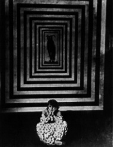
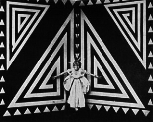
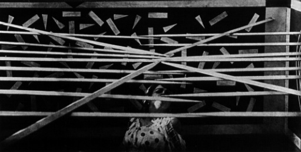

Dal "Manifesto della Cinematografia Futurista" del 1916:
"Il libro, mezzo assolutamente passatista di conservare e comunicare il pensiero, era da molto tempo destinato a scomparire come le cattedrali, le torri, le mura merlate, i musei e l'ideale pacifista. Il libro, statico compagno dei sedentari degli invalidi, dei nostalgici e dei neutralisti, non può divertire nè esaltare le nuove generazioni futuriste ebbre di dinamismo rivoluzionario e bellicoso.
La conflagrazione agilizza sempre più la sensibilità europea. La nostra grande guerra igienica, che dovrà soddisfare TUTTE le nostre aspirazioni nazionali, centuplica la forza novatrice della razza italiana. Il cinematografo futurista che noi prepariamo, deformazione gioconda dell'universo, sintesi alogica e fuggente della vita mondiale, diventerà la migliore scuola per i ragazzi: scuola di gioia, di velocità, di forza, di temerità e di eroismo. Il cinematografo futurista acutizzerà, svilupperà la sensibilità, velocizzerà l'immaginazione creatrice, darà all'intelligenza un prodigioso senso di simultaneità e di onnipresenza. Il cinematografo futurista collaborerà così al rinnovamento generale, sostituendo la rivista (sempre pedantedesca), il dramma (sempre previsto) e uccidendo il libro (sempre tedioso e opprimente). Le necessità della propaganda ci costrigeranno a pubblicare un libro di tanto in tanto. Ma preferiamo esprimerci mediante il cinematografo, le grandi tavole di parole in libertà e i mobili avvisi luminosi.

Con il nostro Manifesto "IL TEATRO SINTETICO FUTURISTA", con le vittoriose tournées delle compagnie drammatiche Gualtiero Tumiati, Ettore Berti, Annibale Ninchi, Luigi Zoncada, coi 2 volumi del TEATRO SINTETICO FUTURISTA contenenti 80 sintesi teatrali, noi abbiamo iniziato in Italia la rivoluzione del teatro di prosa. Antecedentemente un altro Manifesto futurista aveva riabilitato, glorificato e perfezionato il TEATRO DI VARIETA'. E' logico dunque che oggi noi trasportiamo il nostro sforzo vivificatore in un'altra zona del teatro: il CINEMATOGRAFO.
A prima vista il cinematografo, nato da pochi anni, può sembrare già futurista, cioè privo di passato e libero da tadizioni: in realtà, esso, sorgendo come TEATRO SENZA PAROLE, ha ereditate tutte le più tradizionali spazzature del teatro letterario. Noi possimo dunque senz'altro riferire al cinematografo tutto ciò che abbiamo detto e fatto per il teatro di prosa. La nostra azione è leggittima e necessaria, in quanto il cinematografo fino ad oggi E' STATO, E TENDE A RIMANERE PROFONDAMENTE PASSATISTA, mentre noi vediamo in esso la possibilità di un'arte eminentemente futurista e IL MEZZO DI ESPRESSIONE PIU' ADATTO ALLA PLURISENSIBILITA' DI UN ARTISTA FUTURISTA.

Salvo i films interessati di viaggi, caccie, guerre, ecc., non hanno saputo infliggerci che drammi, drammoni e drammetti passatistissimi. La stessa sceneggiatura che per la sua brevità e varietà può sembrare progredita, non è invece il più delle volte che una pietosa e trita ANALISI. Tutte le immense possibilità ARTISTICHE del cinematografo sono dunque assolutamente intatte.
Il cinematografo è un'arte a sè. Il cinematografo non deve mai copiare il palcoscenico. Il cinematografo, essendo essenzialmente visivo, deve compiere innanzittutto l'evoluzione della pittura: distaccarsi dalla realtà, dalla fotografia, dal grazioso e dal solenne. Diventare antigrazioso, deformatore, impressionista, sintetico, dinamico, parolibero.
OCCORRE LIBERARE IL CINEMATOGRAFO COME MEZZO DI ESPRESSIONE per farne lo strumento ideale di UNA NUOVA ARTE immensamente più vasta e più agile di tutte quelle esistenti. Siamo convinti che solo per mezzo di esso si potrà raggiungere quella poliespressività verso la quale tendono le più moderne ricerche artistiche. Il cinematografo futurista crea appunto oggi la sinfonia poliespressiva, che già un anno fa noi annunciavamo nel nostro manifesto: PESI, MISURE E I PREZZI DEL GENIO ARTISTICO. Nel film futurista entreranno come mezzi di espressione gli elementi più svariati: dal brano di vita reale alla chiazza di colore, dalla linea alle parole in libertà, dalla musica cromata e plastica alla musica di oggetti. Esso sarà insomma pittura, architettura, scultura, parole in libertà, musica di colori, linee e forme, accozzo di oggetti e realtà cautizzata. Offriremo nuove ispirazioni alle ricerche dei pittori i quali tendono a sforzare i limiti del quadro. Metteremo in moto le parole in libertà che rompono i limiti della letteratura marciando verso la pittura, la musica, l'arte dei rumori e gettando un meraviglioso ponte tra la parola e l'oggetto reale.

I nostri films saranno:
ANALOGIE CINEMATOGRAFATE usando la realtà direttamente come uno dei due elementi dell'analogia. Esempio: Se vorremo esprimere lo stato angoscioso di un nostro protagonista invece di descriverlo nelle sue fasi di dolore daremo un'equivalente impressione con lo spettacolo di una montagna frastagliata e cavernosa. I monti, i mari, i boschi, le città, gli eserciti, le squadre, gli aereoplani saranno spesso le nostre parole formidabilmente espressive: L'UNIVERSO SARA' IL NOSTRO VOCABOLARIO. Esempio: Vogliamo dare una sensazione di stramba allegria: rappresentiamo un drappello di seggiole che vola scherzando attorno ad un enorme attaccapanni finchè si decidono ad attaccarcisi. Vogliamo dare una sensazione d'ira: frantumiamo l'iracondo in un turbine di pallottole giallo. Vogliamo dare l'angoscia di un Eroe che perdeva la sua fede nel defunto scetticismo neutrale: rappresentiamo l'Eroe nell'atto di parlare ispirato ad una moltitudine; facciamo far scappar fuori ad un tratto Giovanni Giolitti che gli caccia in bocca a tradimento una ghiotta forchettata di maccheroni affongando la sua alata parola nella salsa di pomodoro. Coloriremo il dialogo dando velocemente e simultaneamente ogni immagine che attraversi i cervelli dei personaggi. Esempio: rappresentando un uomo che dirà alla sua donna: sei bella come una gazzella, daremo una gazzella. Esempio: Se un personaggio dice: Contemplo il tuo sorriso fresco e luminoso come un viaggiatore contempla dopo lunghe fatiche il mare dall'alto di una montagna, daremo viaggiatore, mare, montagna punto. In tal modo i nostri personaggi saranno perfettamente comprensibili come SE PARLASSERO.
POEMI, DISCORSI E POESIE CINEMATOGRAFATI. Faremo passare tutte le immagini che li compongono sullo schermo....... In questo modo noi cinematografiamo i più segreti movimenti del genio. Ridicolizzeremo così le opere dei poeti passatisti, trasformando col massimo vantaggio del pubblico le poesie più nostalgicamente monotone e piagnucolose in spettacoli violenti, eccitanti, ed esilarantissimi.
SIMULTANEITA' E COMPENETRAZIONI di tempi e di luoghi diversi CINEMATOGRAFATE. Daremo nello stesso istante-quadro due o tre visioni differenti l'uno accanto all'altra.
RICERCHE MUSICALI CINEMATOGRAFATE (dissonanze, accordi, sinfonie di gesti, fatti, colori, linee, ecc.).
STATI D'ANIMO SCENEGGIATI CINEMATOGRAFATI.
ESERCITAZIONI QUOTIDIANE PER LIBERARSI DALLA LOGICA CINEMATOGRAFATE.
DRAMMI D'OGGETTI CINEMATOGRAFATI (Oggetti animati, umanizzati, truccati, vestiti, passionalizzati, civilizzati, danzanti - Oggetti tolti dal loro ambiente abituale e posti in una condizione anormale che, per contrasto, mette in risalto la loro stupefacente costruzione e vita non umana).
VETRINE DI IDEE, D'AVVENIMENTI , DI TIPI . D'OGGETTI, ECC. CINEMATOGRAFATI.
CONGRESSI, FLIRTS, RISSE E MATRIMONI DI SMORFIE, DI MIMICHE, ECC. CINEMATOGRAFATI. Esempio: un nasone che impone il silenzio a mille dita congressiste scampanellando un orecchio, mentre due baffi carabinieri arrestano un dente.
RICOSTRUZIONI IRREALI DEL CORPO UMANO CINEMATOGRAFATE.
DRAMMI DI SPROPORZIONI CINEMATOGRAFATE (un uomo che avendo sete tira fuori una minuscola cannuccia la quale si allunga ombellicalmente fino ad un lago e lo asciuga DI COLPO).
DRAMMI POTANZIALI E PIANI STRATEGICI DI SENTIMENTI CINEMATOGRAFATI.
EQUIVALENZE LINEARI PLASTICHE, CROMATICHE, ECC. di uomini, donne, avvenimenti, pensieri, musiche, sentimenti, pesi, odori, rumori CINEMATOGRAFATI (daremo con delle linee bianche sul nero il ritmo interno e il ritmo fisico di un marito che scopre sua moglie adultera ed insegue l'amante - ritmo dell'anima e ritmo delle gambe).
PAROLE IN LIBERTA', IN MOVIMENTO CINEMATOGRAFATE (tavole sinottiche di valori lirici - drammi di lettere umanizzate o animalizzate - drammi ortografici - drammi tipografici - drammi geometrici - sensibilità numerica, ecc..).
Pittura + scultura + dinamismo plastico + parole in libertà + intonarumori + architettura + teatro sintetico = Cinematografia futurista.
SCOMPONIAMO E RICOMPONIAMO COSI' L'UNIVERSO SECONDO I NOSTRI MERAVIGLIOSI CAPRICCI, per centuplicare la potenza del genio creatore italiano e il suo predominio assoluto nel mondo.